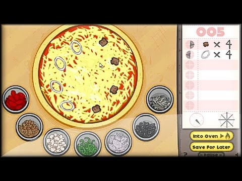

"Want to hear a joke about pizza? Never mind... It's too cheesy."
Why did the pizza start his own business?
He wanted to make some dough!
Want to start your own pizza business? Want to see smiles on customers' faces after they've received the best pizza in the world? Play Papa's Pizzeria and enjoy the thrills and challenges of running a pizza restaurant!
Game Features:
Pizzeria simulation in the Papa Louie universe.
Over 35 unique unlockable customers, each with their own favorite order.
Multi-tasking between topping, baking, and cutting.
Bronze, Silver, and Gold Badges for each customer.
Highscore Board.
Unlimited gameplay.
The Order Station
When you open up your business for the day, customers will regularly arrive to order pizzas. They will order pizzas with directions on how they want it made: toppings, how much time it should be baked, and how it's cut. The game will automatically take their order when you click on the waiting customer.
You can customize this station with decorations earned with money/points, and customers will interact with these decorations as they wait for their order to be finished.
This is also where customers will rate your performance at all stations, and will leave tips accordingly. Thus, as you're preparing their order, don't forget to come back to the order station to see if there are any waiting customers, or else impatient customers will lose you precious points!

The Topping Station
After receiving orders, head over to the topping station to place toppings on a pre-made pie! Drag and drop toppings on specific areas of the pizza to create an outstanding pizza! You start off with pepporoni as the only topping, but as you advance to Day 2, you can unlock the following toppings:
Anchovies
Onions
Mushrooms
Peppers
Sausages
The Baking Station
Each customer wants their pizza prepared to a different amount of freshness. After finishing with toppings, send your pizza to the oven for cooking. Customers will choose to have their pizzas cooked to different points on the timer dial. When the pizza is finished baking, click on it to move it to the next station. The oven can fit a total of four pies, meaning you can multitask with baking four pizzas at once if necessary. You may leave the pizza baking as you go prepare other orders at other stations, just make sure to come back in time before it hits the desired baking time. Time yourself, and take the pie out when it reaches the timer mark as indicated on the customer's order!
This station takes the longest time, so it is recommended to passively bake the pies while you are doing a different task at a different station to maximize efficiency, thus reducing customer waiting time and increasing your ratings and tips.
The Cutting Station
Slice the pizza into even slices, as indicated by the order, then send the steaming, fresh pizza out to the waiting customer! Each customer will order their pizzas sliced into four, six, or eight pieces. To slice pizzas, you must drag across the pizza. After you are done, drag the order ticket to its indicated position and send it out to the customer for review!
If the incorrect number of pieces are cut, or if some slices are disproportionate, points will be deducted upon presenting the pizza to the customer. Be sure to cut evenly or you may have to restart and waste time! Time is money in this game!
Customers: Customers are a valuable component to your business. Be sure to get their order as precise and quick as possible for them to leave a good rating and tip! If you do so, customers will become regulars and you will be able to unlock new customers that may tip more or may demand a more complicated pizza!